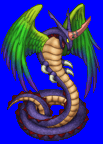
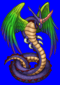
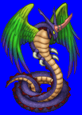
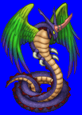

Height: ??? Weight: ???
Habitat: Palace Origin: Mexico
Meaning: Winged snake
A winged snake god that appears in Aztec mythology. He is the god of the stars, the wind, the sunrise, and life. Its natural form is that of a snake with large green wings, but it can also assume human form if it wishes. In the myth, it is said that there were three worlds made before the current one, but were destroyed in fights among the gods in the pantheon, but this one is sustained due to Quezalcoatl's protection.